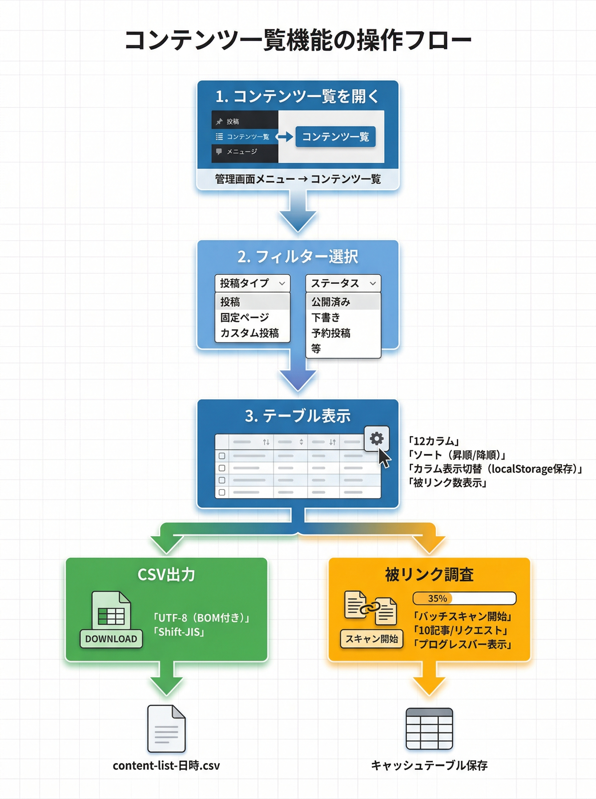

コンテンツ一覧
全ての投稿・固定ページ・カスタム投稿タイプを一覧表示し、ソート・フィルター・カラム表示切替・CSV出力の機能を提供します。
使い方
1
管理画面左メニュー「Kashiwazaki SEO All Content Lister」→「コンテンツ一覧」をクリック
2
フィルターで「投稿タイプ」と「ステータス」を選択して絞り込み
3
テーブルのヘッダーをクリックしてソート（昇順/降順の切り替え）
4
「表示カラム設定」で必要な列の表示/非表示を切り替え

表示カラム一覧
| カラム名 | 説明 | デフォルト |
|---|---|---|
| ID | 投稿ID | 表示 |
| タイトル | 記事タイトル（編集・表示リンク付き） | 表示 |
| URL | パーマリンク | 表示 |
| 投稿タイプ | post, page, カスタム投稿タイプ名 | 表示 |
| ステータス | publish, draft, pending, future, private, trash | 表示 |
| カテゴリー | 所属カテゴリー | 表示 |
| キーワード | SEOプラグインのフォーカスキーワード | 表示 |
| ディスクリプション | SEOプラグインのメタディスクリプション | 表示 |
| 投稿日 | 公開日（Y-m-d H:i形式） | 表示 |
| 更新日 | 最終更新日 | 表示 |
| スラッグ | URLスラッグ | 非表示 |
| 被リンク数 | サイト内からの内部リンク数 | 表示 |
ヒント
カラムの表示/非表示設定はブラウザのlocalStorageに保存されるため、ページをリロードしても設定が維持されます。
CSV出力
1
必要に応じてフィルターで絞り込み
2
エンコーディングを「UTF-8」または「Shift-JIS」から選択
3
「CSVダウンロード」ボタンをクリック
備考
ファイル名は content-list-YYYY-MM-DD-HHmmss.csv 形式で自動生成されます。現在のフィルター条件が反映された内容がエクスポートされます。
| エンコーディング | 用途 |
|---|---|
| UTF-8（BOM付き） | Google スプレッドシート、最新のExcel |
| Shift-JIS | 古いバージョンのExcel（日本語環境） |
ステータスバッジ
| ステータス | 色 | 説明 |
|---|---|---|
| publish | 緑 | 公開済み |
| pending | 橙 | レビュー待ち |
| draft | グレー | 下書き |
| future | 青 | 予約投稿 |
| private | 紫 | 非公開 |
| trash | 赤 | ゴミ箱 |
